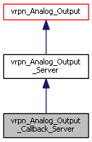

Inheritance diagram for vrpn_Analog_Output_Callback_Server:

Public Member Functions | |
| vrpn_Analog_Output_Callback_Server (const char *name, vrpn_Connection *c, vrpn_int32 numChannels=vrpn_CHANNEL_MAX) | |
| virtual | ~vrpn_Analog_Output_Callback_Server (void) |
| virtual int | register_change_handler (void *userdata, vrpn_ANALOGOUTPUTCHANGEHANDLER handler) |
| virtual int | unregister_change_handler (void *userdata, vrpn_ANALOGOUTPUTCHANGEHANDLER handler) |
 Public Member Functions inherited from vrpn_Analog_Output_Server Public Member Functions inherited from vrpn_Analog_Output_Server | |
| vrpn_Analog_Output_Server (const char *name, vrpn_Connection *c, vrpn_int32 numChannels=vrpn_CHANNEL_MAX) | |
| virtual | ~vrpn_Analog_Output_Server (void) |
| virtual void | mainloop () |
| Called once through each main loop iteration to handle updates. | |
| vrpn_int32 | setNumChannels (vrpn_int32 sizeRequested) |
| Sets the size of the array; returns the size actually set. | |
| const vrpn_float64 * | o_channels (void) const |
| Exposes an array of values for the user to read from. | |
| Public Member Functions inherited from vrpn_Analog_Output | |
| vrpn_Analog_Output (const char *name, vrpn_Connection *c=NULL) | |
| void | o_print (void) |
| vrpn_int32 | getNumChannels () const |
| Public Member Functions inherited from vrpn_BaseClass | |
| vrpn_BaseClass (const char *name, vrpn_Connection *c=NULL) | |
| Names the device and assigns or opens connection, calls registration methods. | |
| virtual | ~vrpn_BaseClass () |
| virtual vrpn_Connection * | connectionPtr () |
| Returns a pointer to the connection this object is using. | |
| Public Member Functions inherited from vrpn_BaseClassUnique | |
| vrpn_BaseClassUnique () | |
| virtual | ~vrpn_BaseClassUnique () |
Static Protected Member Functions | |
| static int VRPN_CALLBACK | handle_change_message (void *userdata, vrpn_HANDLERPARAM p) |
| Handles BOTH types of changes messages, and will be called after the vrpn_Analog_Output_Server class has already filled in the values. | |
| Static Protected Member Functions inherited from vrpn_Analog_Output_Server | |
| static int VRPN_CALLBACK | handle_request_message (void *userdata, vrpn_HANDLERPARAM p) |
| Responds to a request to change one of the values by setting the channel to that value. | |
| static int VRPN_CALLBACK | handle_request_channels_message (void *userdata, vrpn_HANDLERPARAM p) |
| Responds to a request to change a number of channels Derived class must either install handlers for this routine or else make its own routines to handle the multi-channel request message. | |
| static int VRPN_CALLBACK | handle_got_connection (void *userdata, vrpn_HANDLERPARAM p) |
| Used to notify us when a new connection is requested, so that we can let the client know how many channels are active. | |
Protected Attributes | |
| vrpn_Callback_List < vrpn_ANALOGOUTPUTCB > | d_callback_list |
| List of user-level routines that need to be called back to let them know that the values have changed. | |
Additional Inherited Members | |
| Public Attributes inherited from vrpn_BaseClassUnique | |
| bool | shutup |
| vrpn_MESSAGEHANDLER | handler |
| vrpn_int32 | sender |
| vrpn_int32 | type |
| void * | userdata |
| Protected Member Functions inherited from vrpn_Analog_Output_Server | |
| virtual bool | report_num_channels (vrpn_uint32 class_of_service=vrpn_CONNECTION_RELIABLE) |
| virtual vrpn_int32 | encode_num_channels_to (char *buf, vrpn_int32 num) |
Constructor & Destructor Documentation
| vrpn_Analog_Output_Callback_Server::vrpn_Analog_Output_Callback_Server | ( | const char * | name, |
| vrpn_Connection * | c, | ||
| vrpn_int32 | numChannels = vrpn_CHANNEL_MAX |
||
| ) |
|
virtual |
Member Function Documentation
|
staticprotected |
Handles BOTH types of changes messages, and will be called after the vrpn_Analog_Output_Server class has already filled in the values.
It just calls the user callbacks with the appropriate pointer to the data values.
|
inlinevirtual |
|
inlinevirtual |
Member Data Documentation
|
protected |
List of user-level routines that need to be called back to let them know that the values have changed.